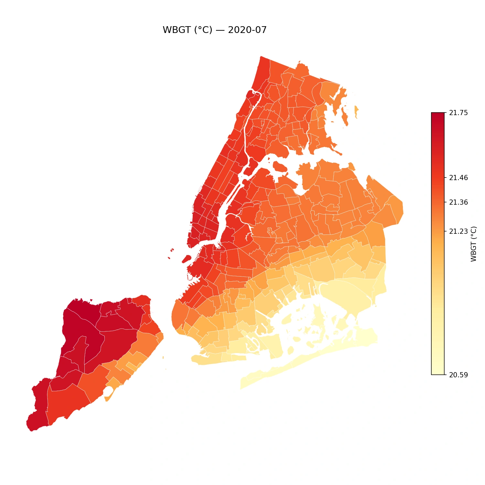
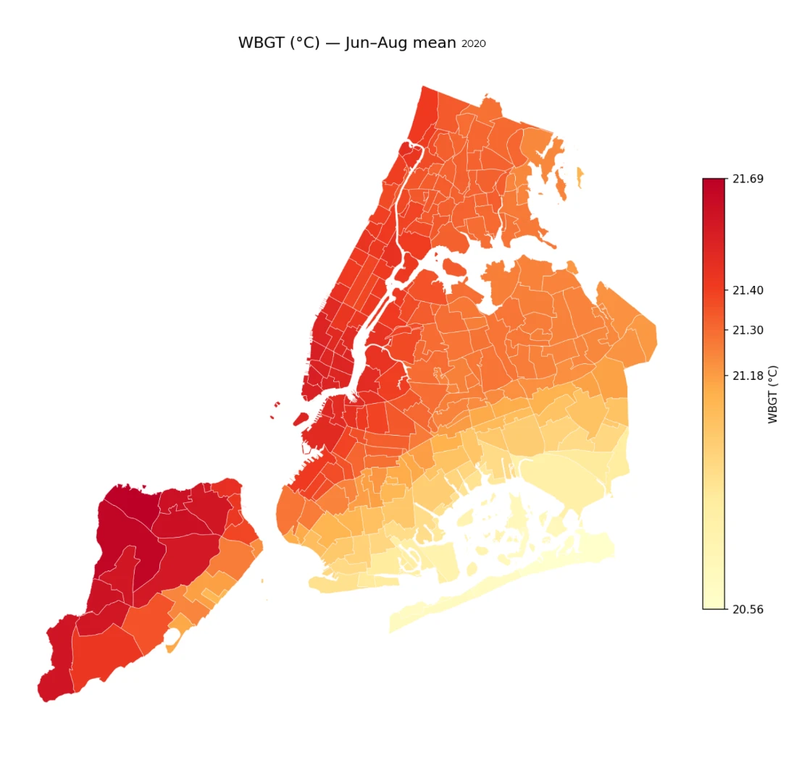
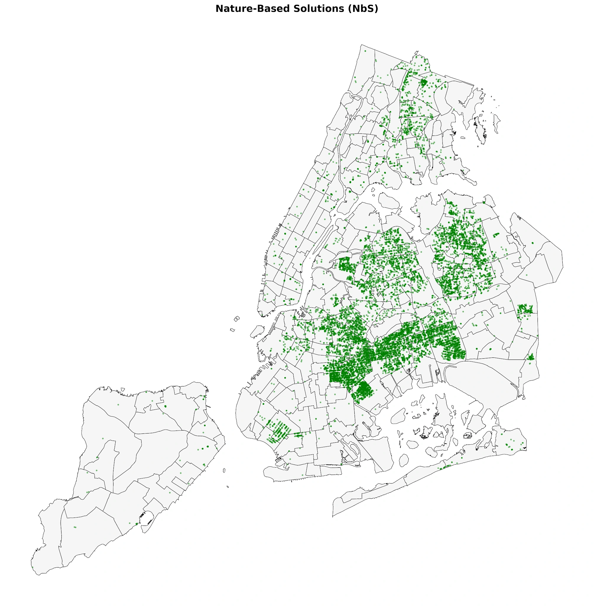
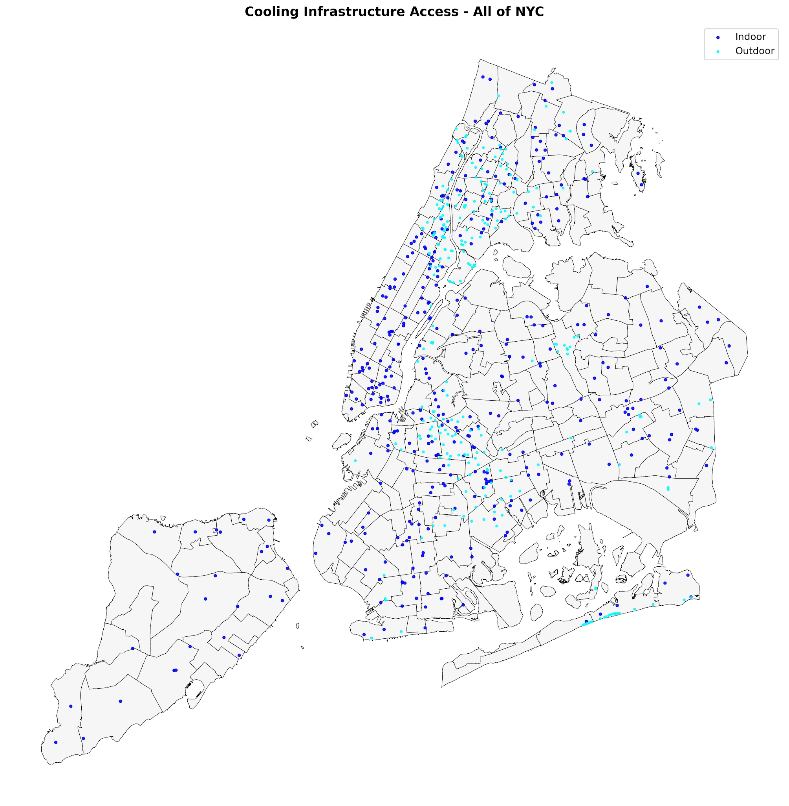
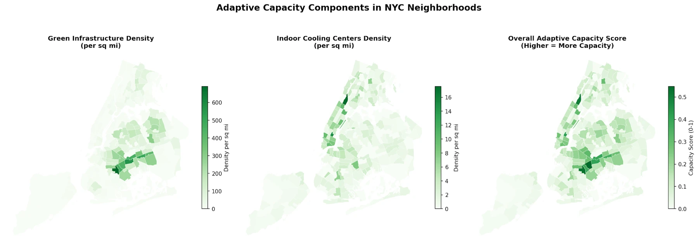
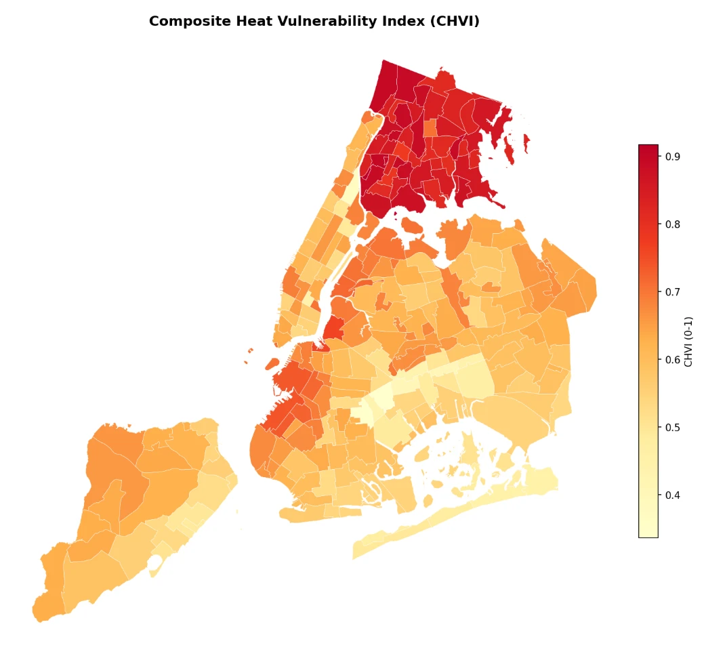
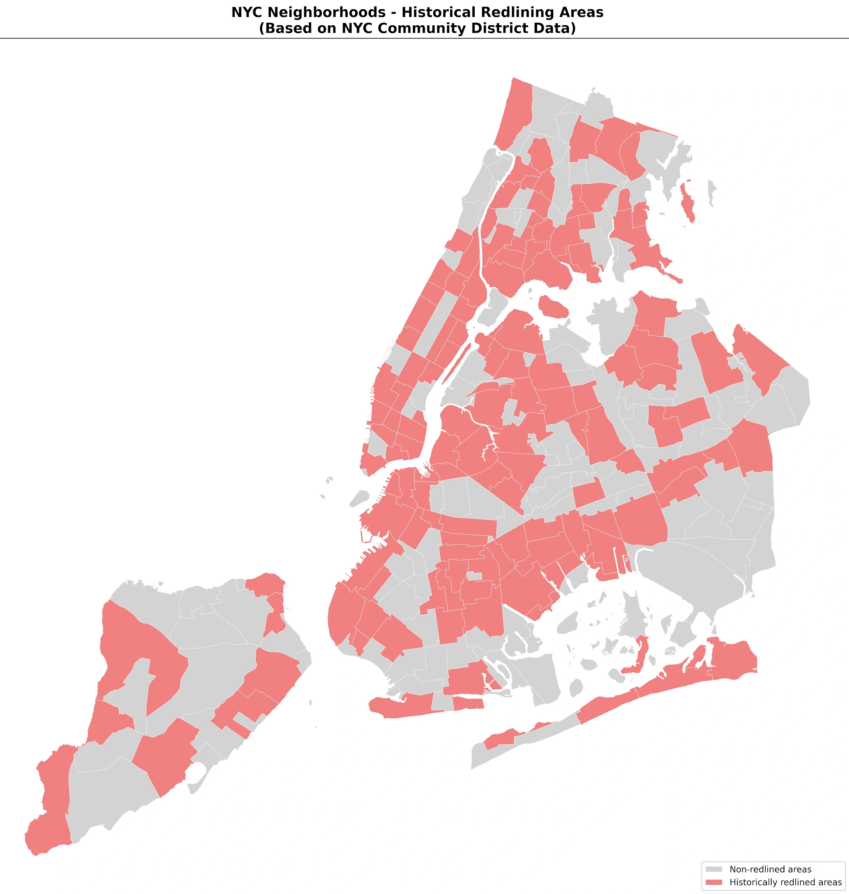
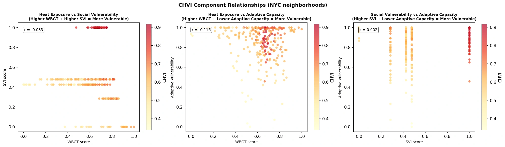
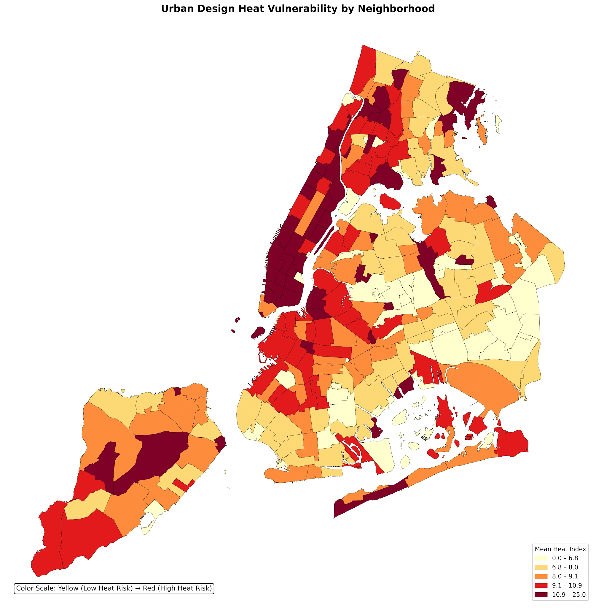
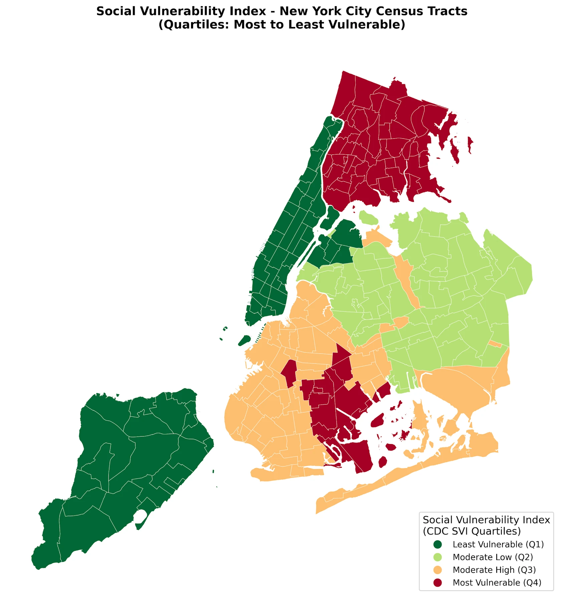

Geospatial research · AI assisted
Mapping Heat Vulnerability and Cooling Gaps in NYC
Summary
Where do heat exposure, social vulnerability, and limited cooling resources overlap in New York City? I developed a Python geospatial workflow that combines modeled Wet Bulb Globe Temperature, social vulnerability, and infrastructure density into a Composite Heat Vulnerability Index. The analysis identifies the Bronx as a concentration of overlapping disadvantages, with additional areas of concern in East Flatbush, western Queens, and northern Brooklyn. The resulting maps help examine where adaptation resources may be needed, while weak component correlations show why heat vulnerability cannot be explained by a single factor.
- 3 dimensionsHeat, vulnerability, capacity
- 8 stagesPython workflow
- 5 boroughsSpatial comparison
- Python
- GeoPandas
- NumPy
- pandas
- GIS
- Matplotlib
Why this matters
Living in a hot neighborhood is only part of the problem. Residents also need usable places to cool down, and the ability to reach and use those resources. Mapping heat alongside social vulnerability and infrastructure can reveal gaps that a temperature map alone would miss.
This project offers a way to screen for overlapping needs and ask better planning questions: where should more detailed assessments of cooling access begin, and which neighborhoods might be overlooked by citywide averages? It supports investigation and prioritization; it does not establish how much a particular investment would reduce illness.
From public datasets to a vulnerability map
I developed the project in Python using Google Colab for data conversion and preprocessing, and VS Code for spatial analysis and visualization. The workflow combines NYC OpenData infrastructure records, Department of City Planning neighborhood boundaries, climate inputs, and CDC Social Vulnerability Index data.
- 01Initialize
- 02Preprocess
- 03Import data
- 04Calculate WBGT
- 05Map infrastructure
- 06Build CHVI
- 07Visualize
- 08Summarize
1. Make the datasets spatially compatible
The pipeline cleans identifiers and geometry fields, loads neighborhood polygons and infrastructure coordinates, and brings spatial layers into compatible coordinate reference systems. Geographic coordinates support mapping; a projected coordinate system supports area calculations and spatial joins. Joining by neighborhood identifiers makes it possible to compare climate, infrastructure, and vulnerability in the same analytical table.
Each layer answers a different question. Climate describes the heat environment, social indicators describe susceptibility, and infrastructure describes listed adaptation resources. Standardizing their geography is the foundation for combining them.
2. Estimate heat exposure across neighborhoods
Wet Bulb Globe Temperature (WBGT) is used as the project’s heat-stress indicator. The Python workflow derives a simplified estimate from temperature and moisture inputs, then aggregates the climate layer to neighborhood geography. The July 2020 map shows one summer month; the June–August mean shows the broader seasonal pattern.


These are modeled monthly and seasonal averages. They should not be interpreted as the daily maximum temperature, a direct street-level sensor measurement, or the number of days above 26°C or 28°C. Coarse climate resolution limits how much neighborhood-scale detail the estimates can support.
3. Locate green and cooling infrastructure
Infrastructure records are converted into spatial features and joined to neighborhood boundaries. Green-infrastructure locations describe the distribution of listed nature-based assets; cooling locations show indoor facilities and outdoor amenities. Mapping these separately makes their different patterns visible before they are summarized into an index.


A resource within a neighborhood boundary is not necessarily accessible to every resident. This stage establishes where listed assets are located; it does not yet account for travel routes, opening hours, facility capacity, or admission restrictions.
4. Normalize resource counts into adaptive capacity
Raw counts can favor larger neighborhoods. To make comparisons more useful, the current index script divides green-infrastructure and indoor-cooling-center counts by neighborhood area, producing densities per square mile. It then min–max normalizes the two density measures to a 0–1 scale and averages them with equal weights.

A higher score represents greater listed resource density relative to other neighborhoods in this dataset. The score is a proxy for adaptive capacity, not a measurement of the amount of cooling available to each resident.
6. Build the Composite Heat Vulnerability Index
The index combines three dimensions: normalized summer WBGT, normalized social vulnerability, and normalized lack of adaptive capacity. Adaptive capacity is inverted so that fewer listed resources correspond to greater vulnerability. The current script fills missing component values with NYC medians and gives each dimension equal weight.

Equal weighting makes the construction understandable, but it is a modeling choice. Changing the weights, geographic scale, normalization range, or missing-data treatment can change the rankings. The map is intended to highlight overlapping needs for further investigation.
7. Add historical context
The project compares present-day vulnerability patterns with a historical redlining classification based on Home Owners’ Loan Corporation grades C and D. This comparison asks whether areas shaped by past discrimination overlap with present-day disadvantage.

The overlap in the Bronx and East Flatbush helps frame the research question. A visual comparison alone cannot separate the effect of historical policy from present-day housing, demographics, infrastructure, and other influences.
8. Test how the components relate
Finally, the analysis compares the index components using scatter plots and correlation coefficients. This is a check on whether the dimensions move together, rather than an assumption that heat exposure and infrastructure density must be strongly related.

The findings support examining multiple dimensions together. They do not establish that increasing one infrastructure measure will produce a particular reduction in heat exposure or illness. Repeated SVI values also reflect the borough-level aggregation used in the workflow.
What the maps reveal
The Bronx stands out across dimensions
The analysis identifies the Bronx, particularly the West Bronx, as a concentration of heat exposure, social vulnerability, and high composite vulnerability. Composite scores approach 0.9 in the submitted analysis.
Heat and cooling resources have different geographies
Summer heat estimates are highest in northern Manhattan and the West Bronx. Green and cooling assets follow different spatial patterns, so the presence of infrastructure must be considered alongside exposure and social needs.
Vulnerability extends beyond one borough
East Flatbush, western Queens, and northern Brooklyn also emerge as areas of concern. The maps show why a borough-wide ranking is only a starting point for neighborhood assessment.
The built environment adds another layer
Dense Manhattan corridors and parts of the Bronx show elevated urban-design heat scores. These describe a separate built-environment indicator, rather than a direct measurement of the composite index or individual health risk.
Historical patterns overlap with present vulnerability
The historical redlining comparison shows spatial overlap with socially vulnerable areas, including the Bronx and East Flatbush. This comparison provides historical context; it does not isolate a causal policy effect.
No single component explains the pattern
Pairwise correlations are weak: heat versus social vulnerability r = −0.083; heat versus adaptive capacity r = −0.116; social vulnerability versus adaptive capacity r = 0.002. These results do not support a strong linear relationship between any single pair.
Interpretation and next steps
The index is a relative screening measure, not a validated prediction of illness or a probability of harm. A score of 0.9 does not mean a 90% chance of a heat-related event. Equal component weights are a modeling choice, and the weak correlations do not establish that infrastructure alone determines heat vulnerability.
The current code assigns borough-level SVI to neighborhoods, masking variation within boroughs. The neighborhood heat layer uses simulated estimates derived from coarse climate inputs. Outdoor cooling centers are excluded from the composite index, and resource density cannot capture travel time, hours, accessibility, or capacity. Historical and present-day boundaries also differ.
A stronger next version would use population-weighted neighborhood SVI, higher-resolution climate inputs, accessible travel routes and facility schedules, and sensitivity tests for the index weights. Reproducing every figure from one versioned dataset would make comparisons easier to audit.
5. Compare built conditions and social vulnerability
The project also examines a separate urban-design heat indicator and CDC social vulnerability. The urban-design map provides context about the built environment; the SVI map describes socioeconomic vulnerability. These layers help distinguish a physically hot setting from the social conditions that may make it harder to respond.


The current index code population-weights valid tract-level SVI theme scores within each borough, averages the four themes, and assigns the borough result to its neighborhoods. That aggregation is important when interpreting the composite map: neighborhoods in one borough do not receive fully independent neighborhood-level SVI estimates.